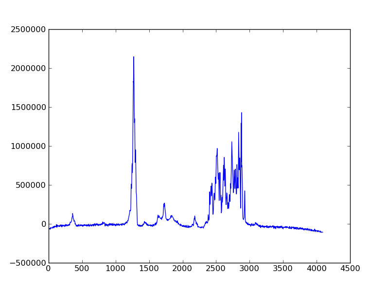

Tutorial¶
Introduction¶
nmrglue is a python module for reading, writing, and interacting with the spectral data stored in a number of common NMR data formats. This tutorial provides an overview of some of the features of nmrglue. A basic understanding of python is assumed which can be obtained by reading some of the python documentation. The examples in this tutorial can be run interactively from the python shell but the use of an enhanced python shell which provides non-blocking control of GUI threads, for example ipython, is recommended when trying the examples which use matplotlib. The sample data using in this tutorial is available is you wish to follow along with the same files.
Reading NMR files¶
nmrglue can read and write to a number of common NMR file formats. To see how simple this can be let’s read a 2D NMRPipe file.
>>> import nmrglue as ng
>>> dic,data = ng.pipe.read("test.fid")
Here we have imported the nmrglue module and opened the NMRPipe file test.fid. nmrglue contains a number of modules for reading and writing NMR files and all of these modules have a read function which opens a file or directory containing NMR data, reads in any necessary information,and loads the spectral data into memory. The read function returns a 2-tuple containing a python dictionary with file and spectral parameters and a numpy array object containing the numeric spectral data. Currently the following file formats are supported by nmrglue with the associated module:
| Module | File Format |
|---|---|
| bruker | Bruker |
| pipe | NMRPipe |
| sparky | Sparky |
| varian | Varian/Agilent |
Examining the data object in more detail:
>>> data.ndim
2
>>> data.shape
(332, 1500)
>>> data.dtype
dtype('complex64')
We can see that this is a two dimensional data set with 1500 complex points in the direct dimension and 332 points in the indirect dimension. nmrglue takes care of converting the raw data in the file into an array of appropiate type, dimensionality, and quadrature. For complex data the last axis, typically the direct dimension, is convert to a complex data type. The other axes are not converted. In some cases not all of the information needed to represent the spectral data as a well formed numpy array is not stored in the file or the values determined automatically are incorrect. In many of these cases this information can be specified directly in the function call.
For example the read function in the varian module sometimes cannot determine the shape or fid ordering of 3D files correctly. These parameters can be explicitly provided in the function call with the shape and torder keywords. See nmrglue.varian for details.
Universal dictionaries¶
In addition to the spectral data the read function also determines various spectral parameters that were stored in the file and stores them in a python dictionary:
>>> dic["FDF2SW"]
50000.0
>>> dic["FDF1LABEL"]
'15N'
Here we see NMRPipe files stores the spectal width of the direct dimension (50000.0 Hz) and the name of the indirect dimension (15N) as well as a number of additional parameter. Some file formats describe well the spectral data, listing a large number of parameters, other only a few. In addition, the different format express the parameters in different units and under different names. For user who are familar with the specific file format or working with only a single file type this is not a problem, the dictionary allows direct access to these parameters. If a more uniform listing of spectal parameter is desired the guess_udic function can be used to create a ‘universal’ dictionary.
>>> udic = ng.pipe.guess_udic(dic,data)
>>> udic.keys()
['ndim', 0, 1]
>>>
This ‘universal’ dictionary of spectral parameter contains only the most fundamental parameters, the dimensionality of the data and a dictionary of parameters for each axis numbered according to the data array ordering (the direct dimension is the highest numbered dimension). The axis dictionaries contain the following keys:
| Key | Description |
|---|---|
| car | Carrier frequency in Hz. |
| complex | True for complex data, False for magnitude data. |
| encoding | How the data is encoded, ‘states’, ‘tppi’, etc. |
| freq | True for frequency domain data, False for time domain. |
| label | String descriping the axis name. |
| obs | Observation frequency in MHz. |
| size | Dimension size (R|I for last axis, R+I for others) |
| sw | Spectral width in Hz. |
| time | True for time domain data, False got frequency domain. |
For our 2D NMRPipe file these parameter for the indirect dimension are:
>>> for k,v in udic[0].iteritems(): print k,v
...
encoding states
car 6077.75985718
sw 5555.55615234
label 15N
complex True
time True
freq False
obs 50.6479988098
size 332
One note on the size key, it was designed to always match the shape of the data:
>>> [udic[n]["size"] for n in range(udic["ndim"])]
[332, 1500]
>>> data.shape
(332, 1500)
Not all NMR files formats contain all the information necessary to determind uniquely all of the universal dictionary parameters. In these cases the dictionary will be filled with generic values (999.99, “X”, “Y”, etc) and should be updated by the user with the correct values. In converting to a ‘universal’ dictionary we have sacrificed additional information about the data which was contained in the original file in order to provide a common description of NMR data. Despite the universal dictionaries limited information, together with the data array it is sufficient for most NMR tasks. We will see later that the universal dictionary allows for conversions between file formats.
Manipulating NMR data¶
Let us return again to the data array. By providing direct access to the spectral data as a numpy array we can examine and manipulate this data using a number of simple methods as well as a number of functions. Since the read function moves the data into memory all this data manipulation is done without effecting the original data file.
We can use slices to examine single values in the array:
>>> print data[0,0]
(42.6003+139.717j)
Or an whole vector:
>>> print data[0]
[ 42.60026550+139.71652222j 360.07470703+223.2023468j
245.21197510+202.19010925j ..., -5.77970505 +11.27639675j
-25.34334183 +0.71600127j 4.61173439 -9.05398846j]
And along the indirect dimension:
>>> print data[:,0]
[ 4.26002655e+01 +1.39716522e+02j 1.69816299e+02 +9.70676041e+01j
...
6.66494827e+01 -4.79175758e+01j 9.63234711e+00 -1.54378242e+01j]
We can do more advanced slicing:
>>> print data[2:5,0:10]
[[ 99.46063232+271.79595947j 336.36364746+246.67727661j
...
233.28765869+188.69224548j 280.29260254+227.20960999j]]
>>> print data[0,::-1]
[ 4.61173439 -9.05398846j -25.34334183 +0.71600127j
-5.77970505 +11.27639675j ..., 245.21197510+202.19010925j
360.07470703+223.2023468j 42.60026550+139.71652222j]
If we just want the real or imaginary channel:
>>> print data[0,0:2].real
[ 42.6002655 360.07470703]
>>> print data[0,0:2].imag
[ 139.71652222 223.2023468 ]
We find characteristics of the data:
>>> data.min()
(-161.38414+71.787979j)
>>> data.max()
(360.07471+223.20235j)
>>> data.mean()
(0.041979135291164656+0.086375666729417669j)
>>> data.std()
23.997132358800357
>>> data.sum()
(20905.609+43015.082j)
Reshape or transpose the data:
>>> data.shape
(332, 1500)
>>> data.reshape(664,750).shape
(664, 750)
>>> data.transpose().shape
(1500, 332)
Finally we can set the value of data as desired. For example setting a single point:
>>> data[0,0] = (100.+100.j)
>>> data[0,0]
(100+100j)
Or a region:
>>> data[1]
array([ 0.+0.j, 0.+0.j, 0.+0.j, ..., 0.+0.j, 0.+0.j, 0.+0.j], dtype=complex64)
>>> data[9].imag
array([ 1., 1., 1., ..., 1., 1., 1.], dtype=float32)
The numpy documentation has additional information on the array object. In addition by combining nmrglue with numpy and/or scipy more complex data manipulation and calculation can be performed. Later we will show how these modules are used to create a full suite of processing functions.
Writing NMR files¶
Now that we have modified the original NMR data we can write our modification to a file. nmrglue again makes this simple:
>>> ng.pipe.write("new_data.fid",dic,data)
Reading in both the original data and this new data we can see that they are different:
>>> new_dic,new_data = ng.pipe.read("new_data.fid")
>>> ng.misc.isdatasimilar(orig_data,new_data)
False
>>> orig_data[0,0]
(42.600266+139.71652j)
>>> new_data[0,0]
(100+100j)
The parameter dictionary has not changed:
>>> ng.misc.isdicsimilar(orig_dic,new_dic)
True
By default nmrglue will not overwrite existing data with the write function:
>>> ng.pipe.write("new_data.fid",dic,data)
Traceback (most recent call last):
...
IOError: File exists, recall with overwrite=True
But this check can be by-passed with the overwrite parameter:
>>> ng.pipe.write("new_data.fid",dic,data,overwrite=True)
The unit_conversion object¶
Eariler we used the array index values for slicing the numpy array. For reference your data in more common NMR units nmrglue provides the unit_coversion object. Use the make_uc function to create a unit_conversion object:
>>> dic,data = ng.pipe.read("test.ft2")
>>> uc0 = ng.pipe.make_uc(dic,data,dim=0)
>>> uc1 = ng.pipe.make_uc(dic,data,dim=1)
We now have unit conversion objects for both axes in the 2D spectrum. We can use these objects to determind the nearest point for a given unit:
>>> uc0("100.0 ppm")
1397
>>> uc1(5000,"Hz")
2205
Or an exact value:
>>> uc0.f("23 %")
470.81
>>> uc1.f(170,"PPM")
863.89020937500004
We can also convert from points to various units:
>>> uc0.ppm(1200)
110.57355437408664
>>> uc1.hz(100)
30692.301979064941
>>> uc0.unit(768,"percent")
37.518319491939423
These objects can also be used for slicing, for example to find the trace closes to 120 ppm:
>>> data[uc0("120ppm")]
array([ 534.28442383, -3447.58349609, -5216.93701172, ..., -8258.26171875,
-8828.359375 , -1102.84863281], dtype=float32)
Converting between file formats¶
nmrglue can also be used to convert between file formats using the convert module. For example to convert a 2D NMRPipe file to a Sparky file:
>>> dic,data = ng.pipe.read("test.ft2")
>>> C = ng.convert.converter()
>>> C.from_pipe(dic,data)
>>> sparky_dic,sparky_data = C.to_sparky()
>>> ng.sparky.write("sparky_file.ucsf",sparky_dic,sparky_data)
Here we opened the NMRPipe file test.ft2 , created a new converter object and loaded it with the NMRPipe data. The converter is then used to generate the Sparky parameter dictionary and a data array appropiate for Sparky data which is written to sparky_file.ucsf. All type conversions, and sign manipulation of the data array is performed internally by the converter object. In addition new dictionaries are created from an internal universal dictionary for the desired output. Additional examples showing how to use nmrglue to convert between NMR file formats can be found in the Convert Examples.
Low memory reading/writing of files¶
Up to this point we have read NMR data from files using the read function. This function reads the spectral data from a NMR file into the computers memory. For small data sets this is fine, modern computer have sufficient RAM to store complete 1D and 2D NMR data sets and a few copies of the data while processing. For 3D and larger dimensionality data set this is often not desired. Reading in an entire 3D data set is not required when only a small portion must be examined for viewing or processing. With this in mind nmrglue provides methods to read only a portions of NMR data from files when it is required. This is accomplished by creating a new object which look very similar to numpy array but does not load data into memory. Rather when a particular slice is requested the the object opens the necessary file(s), reads in the data and returns to the user a numpy array with the data. In addition these objects have tranpose and swapaxes method and can be iterated over just as numpy arrays but without using large amounts of memory. The only limitation of these objects is that they do not support assignment, so a slice must be taken before changing the value of data. The fileio sub-modules all have some form of read_lowmem function which return these low-memory objects. For example reading the 2D sparky file we created earlier:
>>> dic,data = ng.sparky.read_lowmem("sparky_file.ucsf")
>>> type(data)
<class 'nmrglue.fileio.sparky.sparky_2d'>
>>> data.shape
(2048, 4096)
Slicing returns a numpy array:
>>> data[0,1]
array(1601.8291015625, dtype=float32)
>>> data[0]
array([-2287.25195312, 1601.82910156, 475.85516357, ..., -4680.2265625 ,
-72.70507812, -1402.25256348], dtype=float32)
The data can be transposed as a numpy array:
>>> tdata = data.transpose()
>>> type(tdata)
<class 'nmrglue.fileio.sparky.sparky_2d'>
>>> tdata.shape
(4096, 2048)
>>> tdata[1,0]
array(1601.8291015625, dtype=float32)
These low memory usage objects can be written to disk or used in to load a conversion object just as if they were normal numpy arrays.
Similar when large data sets are to be written to disk, it often does not make sense to write the entire data set at once. For this the write_lowmem functions in the fileIO submodules provide methods for trace-by-trace or similar writing.
Processing data¶
With NMR spectral data being stored as a numpy array a number of linear algebra and signal processing functions can be applied to the data. The functions in the numpy and scipy modules offer a number of processing functions users might find useful. nmrglue provides a number of common NMR functions in the nmrglue.proc_base module, baseline related functions in nmrglue.proc_bl, and linear prediction functions in the nmrglue.proc_lp module. For example we perform some simple processing on our 2D NMRPipe file (output supressed):
>>> dic,data = ng.pipe.read("test.fid")
>>> ng.proc_base.ft(data)
>>> ng.proc_base.mir_left(data)
>>> ng.proc_base.neg_left(data)
>>> ng.proc_bl.sol_sine(data)
These functions process only the data, they do not update the spectral parameter associated with the data. Because these values are key when examining NMR data we want functions which take into account these parameter while processing. nmrglue provides the nmrglue.pipe_proc module for processing NMRPipe data while updating the spectral properties simulatanously. Additional modules for processing other file format are being developed. Using pipe_proc is similar to using NMRPipe itself. For example to process the sample 2D NMRPipe file:
>>> dic,data = ng.pipe.read("test.fid")
>>> dic,data = ng.pipe_proc.sp(dic,data,off=0.35,end=0.98,pow=1,c=1.0)
>>> dic,data = ng.pipe_proc.zf(dic,data,auto=True)
>>> dic,data = ng.pipe_proc.ps(dic,data,p0=-29.0,p1=0.0)
>>> dic,data = ng.pipe_proc.di(dic,data)
>>> dic,data = ng.pipe_proc.tp(dic,data)
>>> dic,data = ng.pipe_proc.sp(dic,data,off=0.35,end=0.9,pow=1,c=0.5)
>>> dic,data = ng.pipe_proc.zf(dic,data,size=2048)
>>> dic,data = ng.pipe_proc.ft(dic,data,auto=True)
>>> dic,data = ng.pipe_proc.ps(dic,data,p0=0.0,p1=0.0)
>>> dic,data = ng.pipe_proc.di(dic,data)
>>> dic,data = ng.pipe_proc.tp(dic,data)
This processed file can then be written out
>>> ng.pipe.write("2d_pipe.ft2",dic,data,overwrite=True)
In the example above the entire data set was processed in memory. All the processing functions were applied to a set of data stored in the computers RAM after which the entire 2D data set was written to disk. For 1D and 2D data sets this is fine, but as mentioned earlier many 3D and larger data sets cannot be processed in this manner. For a 3D file what is desired is that each 2D XY plane be read, processed and saved. Then the ZX planes are read from this new file, the Z plane processed and these planes saved into the final file. In nmrglue this can be accomplished for NMRPipe files using the iter3D object. Currently no other file format allows such processing but development of these is planned. An example of processing a 3D NMRPipe file using a iter3D object can be found in process example: process_pipe_3d.
Additonal examples showing how to use nmrglue to process NMR data can be found in the Processing Examples.
Using matplotlib to create figures¶
A number of python plotting libraries exist which can be used in conjunction with nmrglue to produce publication quality figures. matplotlib is one of the more popular libraries and has the ability to output to a number of hardcopy formats as well as offering a robust interactive environment. When using matplotlib interactively use of ipython or a similar shell is recommeneded although the standard python shell can be used. For example to create a simple plot of a 1D spectrum (if the ipython shell is used for this example use the -pylab switch) :
>>> import pylab
>>> dic,data = ng.pipe.read("test.ft")
>>> pylab.plot(data)
[<matplotlib.lines.Line2D object at 0x8754fd0>]
>>> pylab.savefig("plot_1d.png")
Here we have loaded the pylab module from matplotlib and used it to plot the 1D frequency domain data of a model protein. The resulting figure is saved as plot_1d.png.
{kind=link}
A contour plot of 2D data can created in a similar manner:
>>> pylab.cla()
>>> dic,data = ng.pipe.read("test.ft2")
>>> cl = [30000*1.2**x for x in range(20)]
>>> pylab.contour(data,cl)
<matplotlib.contour.ContourSet instance at 0x151e2f80>
>>> pylab.show()
The show() method raises an an interactive window for examining the plot:

matplotlib can be used to create more complicated figures with annotations, ppm axes and more. The Plotting Examples and Interactive Examples showcase some some of this functionality. For additional information see the matplotlib webpage
Additional resources¶
Detailed information about each module in nmrglue as well as the functions provided by that module can be found in the nmrglue Reference Guide or by using Python build in help system:
>>> help(ng.pipe.read)
A number of Examples using nmrglue to interact with NMR data are avilable. Finally documentation for the following packages might be useful to users of nmrglue: